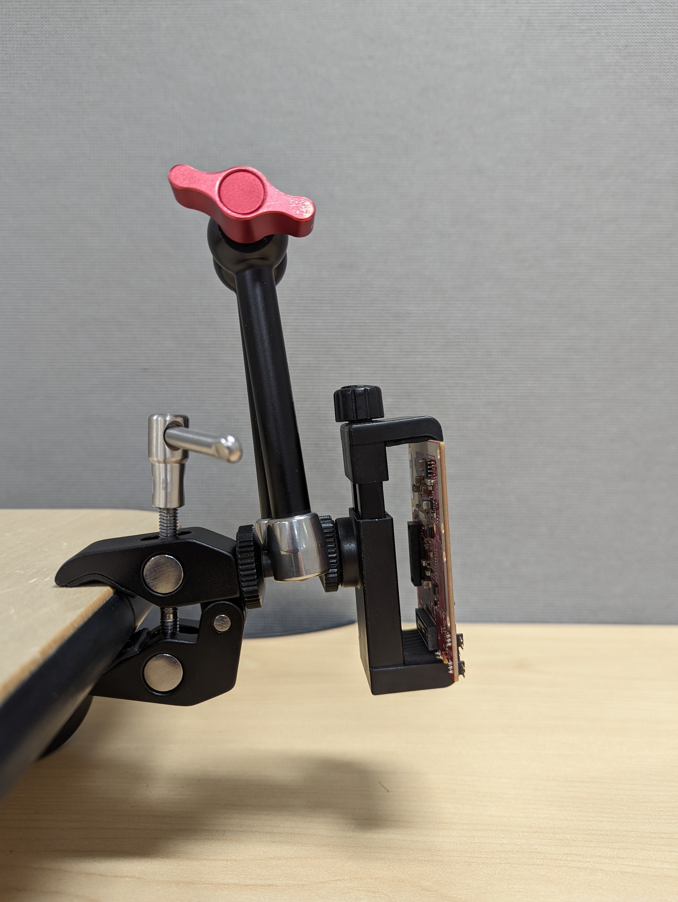

# Overview of Mobile Tracker
This lab demonstrates the use of TI mmWave sensors for the detection of obstacles
for mobile platforms. Its pointcloud and tracker outputs allows the device
to easily flag potential obstacles, even when the environment is dynamically
changing.
The key feature in this lab is the group tracker algorithm implemented in the MSS
on the ARM processor and its tuning which allows it to detect objects which are both
static or dynamic (with respect to the sensor)
This lab runs on the xWR6843 mmWave sensor, and includes configurations to
run on the IWR6843ISK evaluation module with a python visualizer.
<video width="720" autoplay muted loop>
<source src="images/Mobile_Tracker.mp4" type="video/mp4">
</video>
-----------
# Quickstart
This section will briefly go through how to set up and run the demo for evaluation.
## Requirements
[[y! Run Out of Box Demo
Before continuing with this lab, users should first run the out of box demo for the EVM.
This will enable users to gain familiarity with the sensor's capabilities as well as the various tools used across all labs in the mmWave Industrial Toolbox. ]]
### Hardware
Item | Quantity
------------------|-----------------
Antenna Module Board: [IWR6843ISK](http://www.ti.com/tool/IWR6843ISK) | 1
Micro USB Cable | 1
[[r! IWR6843 ES2.0 Only
This lab is only compatible with ES2.0 version of IWR6843.
On ISK, check the device version on your IWR6843 using the on-chip device markings as shown below
1. If line 4 reads `678A`, you have an ES2 device. In this case, this lab is compatible with your EVM.
2. If line 4 reads `60 GHZi`, you have an older ES1 device. In this case, the lab is NOT compatible with your EVM. ES2 IWR6843ISK boards are orderable from the EVM link above.
<img src="../../../../docs/hardware_guides/images/iwr6843_silicon_revision.png" width="300"/>
]]
### Software
Tool | Version | Download Link
--------------------------|---------------------------|--------
mmWave Industrial Toolbox | Latest | Download and install the toolbox. Go to [Using TI Resource Explorer & the mmWave Industrial Toolbox](../../../../docs/readme.html) for instructions.
Python | 3.6 | Visualizer is built using [Python](https://www.python.org/downloads/release/python-360/)
Uniflash | Latest | Uniflash tool is used for flashing TI mmWave Radar devices. [Download offline tool](http://www.ti.com/tool/UNIFLASH) or use the [Cloud version](https://dev.ti.com/uniflash/#!/)
Silicon Labs CP210x USB to UART Bridge VCP Drivers | Latest | Only needed for if using EVM in standalone mode. [https://www.silabs.com/products/development-tools/software/usb-to-uart-bridge-vcp-drivers](https://www.silabs.com/products/development-tools/software/usb-to-uart-bridge-vcp-drivers)
## 1. Mount the EVM
This demo is intended to be mounted to a moving platform suitable.
For evaluation, something like a cart or a remote controlled
car can be used to simulate a robotic platform, if one is not available.
The EVM should be mounted facing forward, with a slight tilt
(either upwards or downwards) to minimize reflections, as shown below.
<p></p>
## 2. Flash the EVM
1. Set the hardware to flashing mode by following the instructions in the [EVM Setup Guide](../../../../docs/hardware_guides/evm_setup_operational_modes.html)
2. Flash the binary corresponding to your device from the prebuilt binaries folder by following the instructions for [using UniFlash](../../../../docs/software_guides/using_uniflash_with_mmwave.html)
3. Set the hardware to functional mode by following the instructions in the [EVM Setup Guide](../../../../docs/hardware_guides/evm_setup_operational_modes.html)
## 3. Run the GUI
1. Launch the GUI by running the executable located in the tools folder. <br>`C:\ti\<mmw_industrial_toolbox_version>\tools\Visualizer`
2. Enter the two COM ports into the proper fields if they did not auto-populate. These can be found by looking at the computer's device manager
3. Select *Mobile Tracker* in the *Config Type* dropdown
4. Click connect and ensure it has connected properly. If it does not connect,
please recheck the COM ports and ensure they are not currently in use.
5. Click *Select Configuration* and find the correct chirp configuration file
for your device/EVM from the *chirp_configs* folder of this lab
6. The boundary boxes should now appear on the graph, if not, please recheck
the selected configuration file
7. Once the proper configuration is selected, click *Start and
After a few moments, points should begin displaying as the device starts chirping.
Tracks are visualized as cubes around groups of points.
# Developer's Guide
This section will go over how to open and modify the source for both the demo
as well as the visualizer
## Modifying Device Software
### CCS Development Requirements
In addition to the materials required in the [quickstart requirements](#requirements),
the following resources are needed/suggested
Tool | Version | Download Link
--------------------------|---------------------------|--------
TI mmWave SDK | 3.5.0.4 | [Link to Latest mmWave SDK](https://www.ti.com/tool/MMWAVE-SDK). To access a previous version, click *Download Options* and then *View all versions*
Code Composer Studio | Latest | [CCS Tool Page](https://www.ti.com/tool/CCSTUDIO)
### Importing CCS Projects
After downloading the necessary software, open CCS and perform the
first time setup, which will configure the workspace and install the
necessary modules.
Once CCS is open to the standard view, go to the project explorer pane,
right click, select *Import*, and then select *CCS Projects*. At the
top of window, next to *Select search directory*, click *browse*. You
will now want to navigate using your file explorer to your installation
location for the mmWave Industrial Toolbox, and then go to the directory
for this lab. Once in the *Mobile_Tracker* folder, click the
*Select Folder* button. Once this is done, you should see a list of projects
in the directory populate the previous window. Check the box next to the
proper MSS project for your device (which should automatically pull in the
DSS project) and then hit finish.
### Building the Project in CCS
At this point, you can now begin to make modifications to the project
as desired.
Once you are ready to build, right click the DSS project
and select *Build Project*. This may take a few minutes. Once complete,
you should either see a build finished message in the console or errors
in the *problems* pane. If it has successfully built, you can then go
to the output folder, which is named after the build configuration (typically *Debug*), and
see a file with a .xe674 extension, which is the image that can be used
for debugging the DSS.
Next, you will want to repeat this process for the MSS project. It is
important that the DSS project is built **prior** to building the MSS
project, so that the post-build steps on the MSS can create the combined binary.
Once the MSS has successfully built, the output folder should contain
2 files of interest. The first will have a .xer4f extension, which can
be used to debug the MSS. The second file will be have a .bin extension,
which can be used to flash the device in order to run without debugging.
### Flashing the Built Project
If you want to run the demo without debugging, follow the steps in
[Quickstart](#Quickstart) for flashing, but instead you will want to
flash the binary that has been built by the MSS project. This can be
found by going to the following directory
`<CCS_Workspace>\<lab_name>_mss\<build_configuration>\<demo_name>.bin`
If you intend to step through and debug using CCS, please follow the
steps in the [CCS Debugging Guide](../../../../docs/software_guides/using_ccs_debug.html)
to load the images generated by the DSS and MSS projects. Please note
that this requires the mmWaveICBoost EVM in addition to the antenna
module.
## Work with GUI Source Code
The source files for this GUI are located in the following directory:
`<INDUSTRIAL_TOOLBOX_INSTALL_DIR>\mmwave_industrial_toolbox_<VER>\tools\Visualizer`
In order to launch the GUI from source, you will need to have the proper
python modules installed, which can are included in the environment setup
batch file that can be found in the visualizer source directory. Once installed,
it can be launched via a terminal with the command `py gui_main.py`. This
enables changes to be made to the python visualizer and tested easily.
## Tuning
When tuning this lab, there are a few key configurable options that you may
want to modify when tuning and testing the lab. Tuning can broken down into two areas: the point cloud/detection layer
and the tracker layer.
### Tuning the Point Cloud
The detection layer has many parameters that go into the configuration (cfg) file. One of the parameters that need to be highlighted
is the CFAR parameters. The constant false alarm rate (CFAR) is an algorithm that is applied to the 2D range-azimuth heatmap for detection and point cloud detection.With regards to configuration tuning, CFAR is the most impactful parameter with regards to the point cloud's behavior.
CFAR values used in Mobile_Tracker_6843_ISK.cfg
```java
//subFrameIdx, procDirection, mode, noiseWin, guardLen, divShift, cyclic, threshold, peakGrouping
cfarCfg -1 0 2 8 4 3 0 20 0
cfarCfg -1 1 0 4 2 3 1 15 0
//subFrameIdx, procDirection, min, max
cfarFovCfg -1 0 0 11.11
cfarFovCfg -1 1 -2.04 2.04
```
If the point cloud for certain objects is too sparse, then the **cfarCfg**
**threshold** parameter may need to be lowered. For more details on this parameter,
check the Configuration File Format pages in the mmWave SDK User Guide.
For more details on tuning detection layer parameters, check the pdf linked below.
[Detection Layer Parameter Tuning Guide for the 3D People Counting Demo – Rev 3.0](../../../../labs/People_Counting/docs/3D_people_counting_detection_layer_tuning_guide.pdf)
### Tuning the Tracker
The parameters below are all within the cfg and sets up the tracker.
```java
staticBoundaryBox -1.8 1.8 0.4 7.8 -0.2 1.8
boundaryBox -2 2 0.5 8 -0.3 2
sensorPosition 0.5 0 0
gatingParam 4 2 2 2 10
stateParam 10 5 5 50 1 600
allocationParam 20 20 0.05 4 2 2
maxAcceleration 0.1 0.1 0.1
trackingCfg 1 2 250 20 20 260 90
presenceBoundaryBox -3 3 2 6 0.5 2.5
```
Some of the most common issues that can occur within the tracker layer is seeing too many tracks (ghosting), or objects not
being recognized when there are not enough tracks.allocationParam is the parameter the focus on candidate points and whether they should be turned into a track. This is done via applying thresholds on the SNR, density, and velocity of the points in order to get accurate tracking.
For more details on tuning the tracker layer parameters, check the pdf linked below.
[Tracker Layer Parameter Tuning Guide for the 3D People Counting Demo – Rev 3.0](../../../../labs/People_Counting/docs/3D_people_counting_tracker_layer_tuning_guide.pdf)
# Interfacing with the Device via UART
Similar to the majority of the other mmWave Industrial Toolbox labs, this lab
utilizes a pair of UART COM ports to communicate with a host PC. The CLI port
is used to send commands to the device for configuration (typically by sending a cfg file)
while the data port is used to stream data from the device to the host after
the device has began chirping.
## CLI Commands
This demo supports all CLI commands implemented by the xWR6843 Out Of Box Demo as
well as the commands used for the tracker layer.
* For details on CLI commands implemented in the
Out Of Box Demo, please refer to the [mmWave SDK User's Guide,](https://software-dl.ti.com/ra-processors/esd/MMWAVE-SDK/03_05_00_04/exports/mmwave_sdk_user_guide.pdf)
specifically the section titled *Configuration File Format*
* For details on CLI commands implemented as part of the tracker layer,
please refer to the [Tracker Layer Tuning Guide](../../../People_Counting/docs/3D_people_counting_detection_layer_tuning_guide.pdf)
## Output Data Format
This lab leverages the same output format as the xWR6843 Out Of Box Demo
with an additional Type-Length-Value (TLV) packet for the occupancy information.
For more information on the Out Of Box Demo output format, please refer to
the [Understanding UART Data Output Format guide](../../../../docs/software_guides/Understanding_UART_Data_Output_Format.html.html)
This demo outputs TLV's of the following types:
* MMWDEMO_OUTPUT_MSG_SPHERICAL_POINTS
* MMWDEMO_OUTPUT_MSG_DETECTED_POINTS_SIDE_INFO
* MMWDEMO_OUTPUT_MSG_TRACKERPROC_3D_TARGET_LIST
* MMWDEMO_OUTPUT_MSG_TRACKERPROC_TARGET_INDEX
------
# Need More Help?
* Additional resources in the documentation of the mmWave SDK:
* mmWave SDK Module Doc located at `<mmwave_sdk_install_dir>/docs/mmwave_sdk_module_documentation.html`
* mmWave SDK User's Guide located at `<mmwave_sdk_install_dir>/docs/mmwave_sdk_user_guide.pdf`
* Search for your issue or post a new question on the [mmWave E2E forum](https://e2e.ti.com/support/sensor/mmwave_sensors/f/1023)